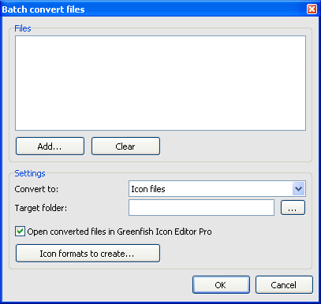

Batch conversion
Use batch conversion if you want to convert several image files to icons, icons to image files, etc. at one time. You can automate the process by choosing File | Batch convert files or clicking on the corresponding icon in the Startup screen.

- Use Add... and Clear to manage the list of files to be converted.
- Set the destination format using the scrolldown menu.
- Specify an output folder for the resulting files. Leaving the box blank means that the files will be output into the same folder as the original file.
- When converting to icons/cursors, use Icon formats to create to set icon sizes. See Creating icon from image for further details.
- You can tell GFIE to open the resulting files for further editing by using the check box.
- Click OK to start conversion.